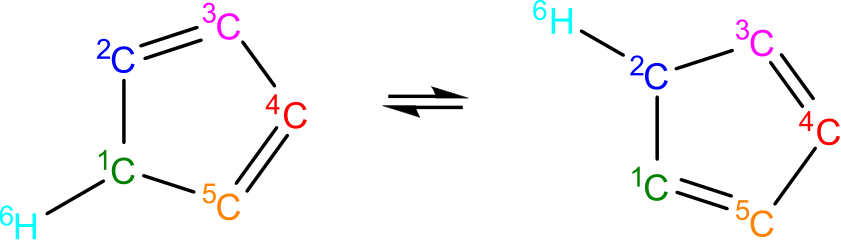
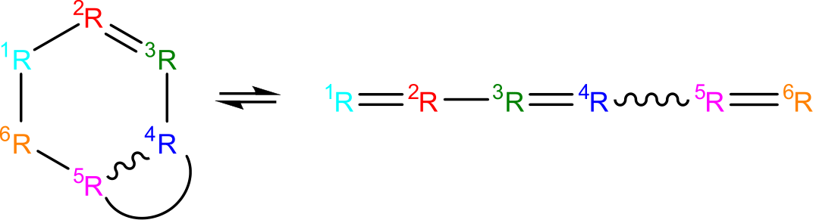
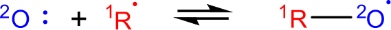

9.3. Kinetics Database¶
This section describes the general usage of RMG’s kinetic database. See Modifying the Kinetics Database for instructions on modifying the database.
Pressure independent reaction rates in RMG are calculated using a modified Arrhenius equation, designating the reaction coefficient as \(k(T)\) at temperature \(T\).
\(R\) is the universal gas constant. The kinetic parameters determining the rate coefficient are:
- \(A\): the pre-exponential A-factor
- \(T_0\): the reference temperature
- \(n\): the temperature exponent
- \(E_a\): the activation energy
- \(\alpha\): the Evans-Polanyi coefficient
- \(\Delta H_{rxn}\): the enthalpy of reaction
When Evans-Polanyi corrections are used, \(\Delta H_{rxn}\) is calculated using RMG’s thermo database, instead of being specified in the kinetic database.
9.3.1. Libraries¶
Kinetic libraries delineate kinetic parameters for specific reactions. RMG always chooses to use kinetics from libraries over families. If multiple libraries contain the same reaction, then precedence is given to whichever library is listed first in the input.py file.
For combustion mechanisms, you should always use one small-molecule combustion library, such as the pre-packaged ERC-Foundation Fuel. The reactions contained in these libraries are poorly estimated by kinetic families and are universally important to combustion systems.
Kinetic libraries should also be used in the cases where:
- A set of reaction rates were optimized together
- You know the reaction rate is not generalizable to similar species (perhaps due to catalysis or aromatic structures)
- No family exists for the class of reaction
- You are not confident about the accuracy of kinetic parameters
9.3.2. Families¶
Allowable reactions in RMG are divided up into classes called reaction families. All reactions not listed in a kinetic library have their kinetic parameters estimated from the reaction families.
Each reaction family contains the files:
- groups.py containing the recipe, group definitions, and hierarchical trees
- training.py containing a training set for the family
- rules.py containing kinetic parameters for rules
There are currently 45 reaction families in RMG:
1+2_Cycloaddition

1,2-Birad_to_alkene

1,2_Insertion_carbene

1,2_Insertion_CO

1,2_shiftS

1,3_Insertion_CO2

1,3_Insertion_ROR

1,3_Insertion_RSR

1,4_Cyclic_birad_scission

1,4_Linear_birad_scission

2+2_cycloaddition_CCO

2+2_cycloaddition_Cd

2+2_cycloaddition_CO

Birad_recombination

Cyclic_Ether_Formation

Diels_alder_addition

Disproportionation

H_Abstraction

H_shift_cyclopentadiene
{kind=link}
HO2_Elimination_from_PeroxyRadical

Intra_Diels_alder
{kind=link}
Intra_Disproportionation

intra_H_migration

intra_NO2_ONO_conversion

intra_OH_migration

Intra_R_Add_Endocyclic

Intra_R_Add_Exocyclic

Intra_R_Add_ExoTetCyclic

Intra_RH_Add_Endocyclic

Intra_RH_Add_Exocyclic

intra_substitutionCS_cyclization

intra_substitutionCS_isomerization

intra_substitutionS_cyclization

intra_substitutionS_isomerization

ketoenol

Korcek_step1

Korcek_step2

lone_electron_pair_bond

Oa_R_Recombination
{kind=link}
R_Addition_COm

R_Addition_CSm

R_Addition_MultipleBond

R_Recombination

Substitution_O

SubstitutionS

9.3.2.1. Recipe¶
The recipe can be found near the top of groups.py and describes the changes in bond order and radicals that occur during the reaction. Reacting atoms are labelled with a starred number. Shown below is the recipe for the H-abstraction family.

The table below shows the possible actions for recipes. The arguments are given in the curly braces as shown above. For the order of bond change in the Change_Bond action, a -1 could represent a triple bond changing to a double bond while a +1 could represent a single bond changing to a double bond.
| Action | Argument1 | Argument2 | Argument3 |
|---|---|---|---|
| Break_Bond | First bonded atom | Type of bond | Second bonded atom |
| Form_Bond | First bonded atom | Type of bond | Second bonded atom |
| Change_Bond | First bonded atom | Order of bond change | Second bonded atom |
| Gain_Radical | Specified atom | Number of radicals | |
| Lose_Radical | Specified atom | Number of radicals |
Change_Bond order cannot be directly used on benzene bonds. During generation, aromatic species are kekulized to alternating double and single bonds such that reaction families can be applied. However, RMG cannot properly handle benzene bonds written in the kinetic group definitions.
9.3.2.2. Training Set vs Rules¶
The training set and rules both contain trusted kinetics that are used to fill in templates in a family. The training set contains kinetics for specific reactions, which are then matched to a template. The kinetic rules contain kinetic parameters that do not necessarily correspond to a specific reaction, but have been generalized for a template.
When determining the kinetics for a reaction, a match for the template is searched for in the kinetic database. The three cases in order of decreasing reliability are:
- Reaction match from training set
- Node template exact match using either training set or rules
- Node template estimate averaged from children nodes
The reaction match from training set is accurate within the documented uncertainty for that reaction. A template exact match is usually accurate within about one order of magnitude. When there is no kinetics available for for the template in either the training set or rules, the kinetics are averaged from the children nodes as an estimate. In these cases, the kinetic parameters are much less reliable. For more information on the estimation algorithm see Kinetics Estimation.
The training set can be modified in training.py and the rules can be modified in rules.py. For more information on modification see Adding Training Reactions and Adding Kinetic Rules.
Table Of Contents
Edit this page
|
|
Learn more about the RMG software
|
|
|
Browse the RMG database of chemical parameters
|
|
|
Online form for making an RMG input file
|
|
|
Draw a group structure from its adjlist
|
|
|
Draw a molecule from its adjlist and search its properties
|
|
|
Search for the kinetics of a chemical reaction
|
|
|
Search for the solvation properties of a reaction between a solvent and a solute
|
|
|
CanTherm pdep calculations
|
|
|
Additional tools to supplement RMG
|